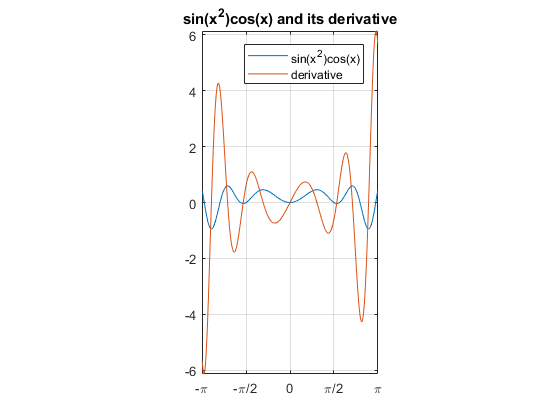
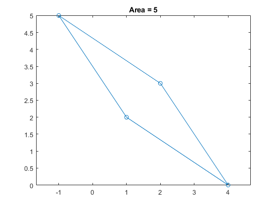
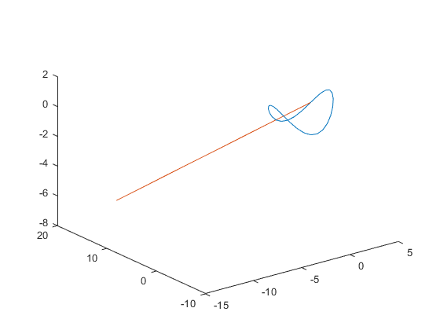
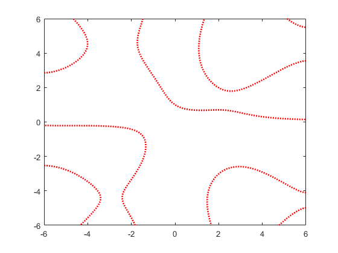
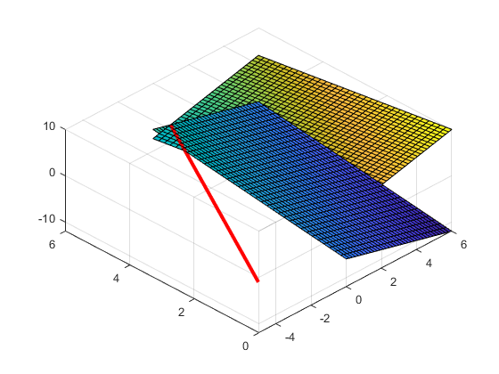
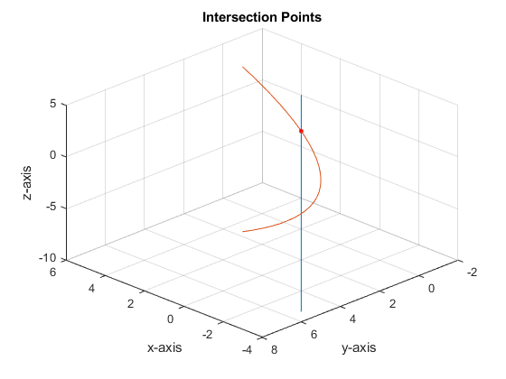

Matlab Assignment #1
Zhenghao Zhu
Contents
Problem 1:
p1 = num2str(sinh(log(2)) + (exp(pi) - atan(-1))^(1/2),11); fprintf(p1);
5.6414303426
Problem 2:
syms x; y = sin(x.^2).*cos(x); p = fplot(y,[-pi pi]); set(gca,'xticklabel',{'-\pi','-\pi/2',0,'\pi/2','\pi'}); set(gca,'xtick',[-pi,-pi/2,0,pi/2,pi]); hold on dy = diff(y); dp = fplot(dy,[-pi pi]); title('sin(x^2)cos(x) and its derivative'); legend('sin(x^2)cos(x)','derivative'); grid on axis equal hold off
Problem 3:
x = [1,4,2,-1,1]; y = [2,0,3,5,2]; plot(x,y,'-o'); area = polyarea(x,y); title(['Area = ' num2str(area)]); axis equal;
Problem 4:
syms t t = linspace(0,2*pi,30); x = 3*cos(t); y = 3*sin(t); z = (cos(t)).^2 - (sin(t)).^2; dx = -(3/sqrt(2))*t+(3/sqrt(2)); dy = (3/sqrt(2))*t+(3/sqrt(2)); dz = -t; plot3(x,y,z); hold on plot3(dx,dy,dz); hold off
Problem 5:
f = fimplicit(@(x,y)(x*sin(y) + y*cos(x) - 1),[-6 6 -6 6]); f.Color = 'r'; f.LineStyle = ':'; f.LineWidth = 2;
Warning: Function behaves unexpectedly on array inputs. To improve performance, properly vectorize your function to return an output with the same size and shape as the input arguments.
Problem 6:
syms x y z = 4 - x + y; fsurf(z, [0 6 0 6]); hold on z2 = x - y - 6; fsurf(z2, [0 6 0 6]); syms t t = linspace(0,6,50); x = t; y = -5 + 1*t; z = -1 + 0*t; plot3(x,y,z,'r','LineWidth',3); hold off view([1,1,-2]);
Problem 7:
t = linspace(-6,0,30); s = linspace(-1,3,30); xt = 2 + t; yt = -t; zt = 3 + 2*t; xs = (s.^2) - 3; ys = 5 - 2*s; zs = -1 + s; plot3(xt,yt,zt); hold on plot3(xs,ys,zs); view([-1,1,1]); title('Intersection Points'); grid on; xlabel('x-axis'); ylabel('y-axis'); zlabel('z-axis'); plot3(1, 1, 1,'.','MarkerSize',12,'Color','red') hold off